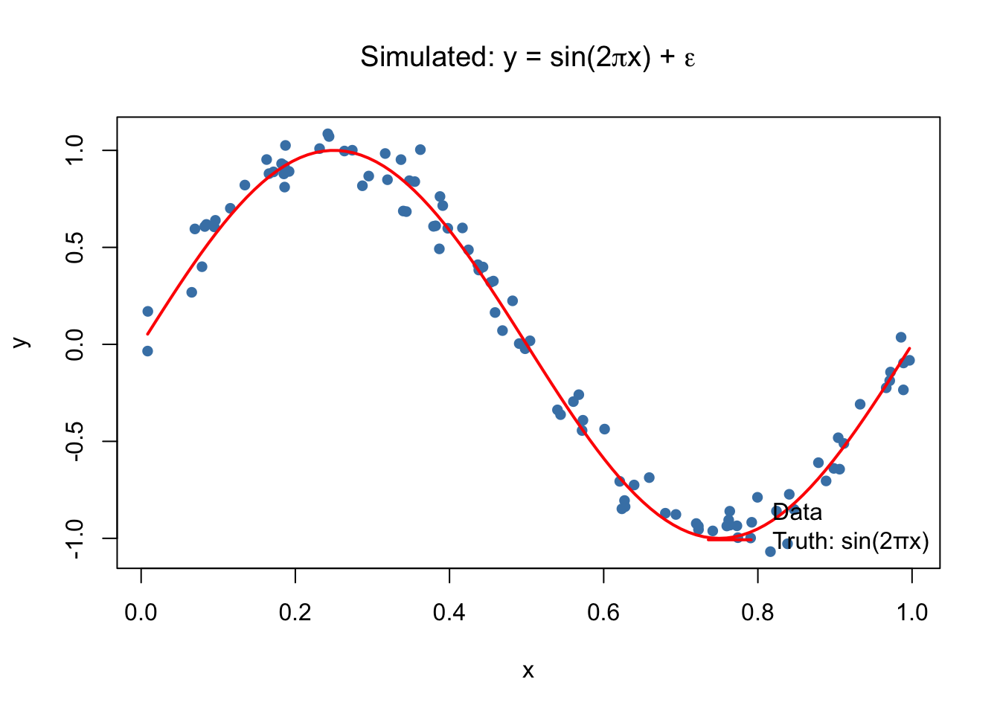
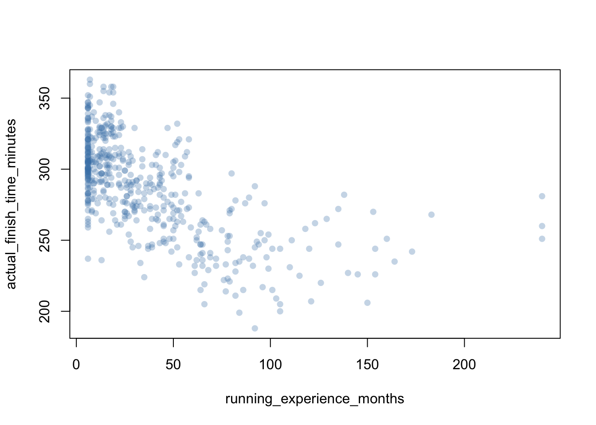

`%||%` <- function(a,b) paste0(a,b)
set.seed(7)
n <- 100
x <- runif(n)
y <- sin(2 * pi * x) + rnorm(n, 0, 0.1)
sim <- data.frame(x = x, y = y)
aq <- na.omit(airquality[, c("Ozone", "Temp", "Wind", "Solar.R")])10 Explainer
10.1 The Linear Model
Let’s go to where it all starts for many of us, y = mx+b.
This is probably what initially pops into most people’s head when they think of a linear model.
We put in some value for x that we are given or observe, then multiply that by a value of m, which we commonly call the slope, and then we add an intercept term, b, in order to get our output value of y.
If we repeatedly do this, we can get a bunch of values of y, and we could plot a general line for this relationship between x and y, or inputs and outputs.
This y=mx+b is a model, with the parameters of m and b. In the following discussion, we will talk about what it means to use different parameters for our models with the same inputs and outputs along with a slightly different and much expanded idea of a linear model than the one our teachers illustrated in school.
The linear model that we are exploring here is the linear regression model with the following components. Y is the scalar outcome, and x is a vector of predictor values for that outcome.
It has a conditional mean component, which can be expressed as \[E[Y \mid \mathbf{x}] = \beta_0 + \beta_1 x_1 + \cdots + \beta_p x_p = \beta_0 + \sum_{j=1}^p x_j \beta_j = \sum_{j=0}^p x_j \beta_j = \mathbf{x}'\mathbf{\beta}\] where we set x0=1 to absorb the intercept into the dot product.
It also has a conditional variance component \[\text{Var}(Y \mid \mathbf{x}) = \sigma^2\]
Which leads to the following conditional distribution \[Y \mid \mathbf{x} \sim \text{Normal}(\mathbf{x}'\mathbf{\beta},\; \sigma^2)\]
Now in contrast to the super simple model we started with and then this scalar model we outlined above, we typically work with n observations simultaneously, so it is better for us to work with matrix notation instead. We let Y be the nx1 vector of outcomes and X be the nx(p+1) design matrix.
Now our notation for the model is \[Y = X\beta + \varepsilon, \qquad \varepsilon \sim \text{Normal}(\mathbf{0}_n,\; \sigma^2 I_n)\]
Y is an nx1 vector of outcomes, where Yi is the outcome for observation i X is the nx(p+1) design matrix, where the first column is all ones for the intercept; Xij is the j-th predictor value for observation i B is the p+1 x 1 coefficient vector, B0 is the intercept, Bj is the coefficient for the j-th predictor sigma^2 is a scalar for the conditional variance epsilon is an nx1 error vector 0n is a vector of all zeroes of length n In is the identity matrix of size n
In the scalar form, you might write \[y_i = \beta_0 + \beta_1 x_{i1} + \cdots + \beta_p x_{ip} + \varepsilon_i, \qquad \varepsilon_i \overset{\text{iid}}{\sim} \text{Normal}(0,\, \sigma^2)\]
We have four important assumptions to track here 1. Linearity in parameters: E[Y|x] is linear in B. 2. Independence of errors: epsilon_i are independent across observations 3. Homoscedasticity: Var(epsilon_i) = sigma^2 for all i 4. Normality of errors; epsilon_i are normally distributed with mean 0 and variance sigma^2
10.2 Nonlinearity
We just worked through how we might approach a model if the relationship between our input and output were linear. However, we can think of plenty of situations where the relationship we’re trying to model is not linear.
The question then is, can we apply the model we’ve outlined in some way to model this other relationship? And lucky for us the answer is yes.
We get to do some math that changes how we set the parameters for our model, so that we can model the nonlinear relationship. The general idea of how we do this is called basis expansion.
One key note to point out is that the linear model means that we have linearity in the parameters, not necessarily the predictors. In the examples below, we have a linear relationship in B in both equations, but a non linear relationship with x in the second equation. However, if we were to treat x and x^2 as two separate predictors, then the model is a standard linear model wiht two columns in X, the design matrix.
That idea of treating things as separate predictors and replacing it with a set of derived features is called basis expansion.
10.2.1 Basis expansion
The generalized formula for basis expansion is below, \[E[Y \mid x] = \beta_0 + \sum_{k=1}^{K} \beta_k \, b_k(x)\] where \([b_0(x), \ldots, b_K(x)]\) represent the set of derived features or basis expansion of predictor x. These are chosen so that a linear combination of these can approximate nonlinear functions of x. The model is still linear in the beta parameters, so we can still solve the normal equations.
In the following sections, we will get an overview of different types of basis expansion models. First, let’s generate and load in some data to work with.
10.3 Make and read in some data
For the generated data, we’ll make 100 observations from the known function \(f(x) = \sin(2\pi x)\), adding small Gaussian noise. Because we know the truth, we can directly evaluate how well each basis expansion recovers it.
plot(sim$x, sim$y, pch = 16, col = "steelblue",
xlab = "x", ylab = "y",
main = expression("Simulated: y = sin(2" * pi * "x) + " * epsilon))
curve(sin(2 * pi * x), add = TRUE, col = "red", lwd = 2)
legend("bottomright",
legend = c("Data", "Truth: sin(2πx)"),
col = c("steelblue", "red"),
pch = c(16, NA), lty = c(NA, 1), lwd = c(NA, 2),
bty = "n")
For the “real” data, we’ll explore a simulated Running Performance dataset from Kaggle, and explore an outcome of actual_finish_time_minutes with predictor running_experience_months.
plot(actual_finish_time_minutes ~ running_experience_months, data = demo_data,
pch = 16, col = adjustcolor("steelblue", 0.3))
10.3.0.1 Polynomials
As we mentioned briefly earlier when we introduced x^2 to the linear model, the easiest way to conceive of basis expansion models is with the polynomial.
Let’s consider the general form with polynomial of degree d. The basis expansion follows this form:
which produces a model that looks like this:
We maintain linearity in our beta parameters.